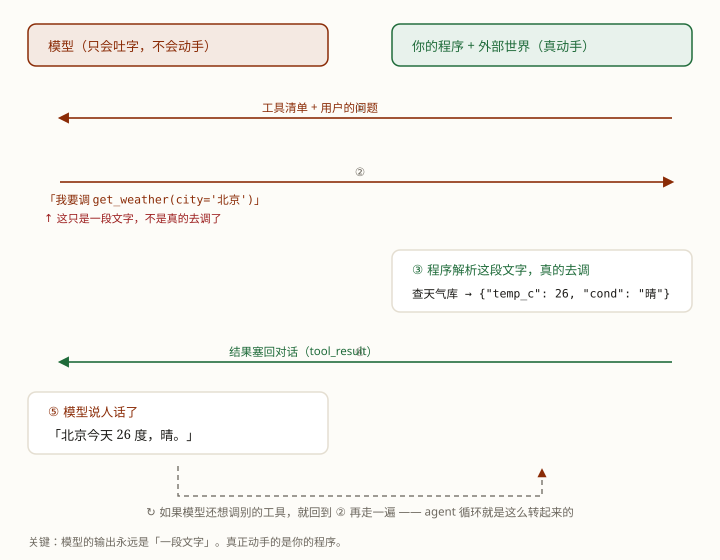

工具调用（Tool Use）—— agent 循环里那个"行动"，到底长什么样。
你让模型查天气、发邮件、读文件——可它自己根本动不了。
它从头到尾只会一件事：吐字。
那"查天气"到底是怎么发生的？
拆穿了其实很简单：它没有动手，它只是"说"要动手。真正去查天气库的，是你的程序。模型说"我要查北京"，你的程序听到就去查，把结果递回去，模型再把结果翻译成人话。
学完这课，你能：把一次工具调用的完整来回讲一遍，并且看一眼 prompt 就知道模型会调哪个工具。
整个来回只有三步：
① 我们给模型一张「工具清单」→ ② 模型说"我要调 X，参数是 Y" → ③ 程序去调，把结果塞回去
就这么简单。所谓"agent 能做事"，全靠这个来回反复转。下面一节一节看。
这是全课最重要的一句话，先立住：
模型的输出永远是"一段文字"。即使它看起来在"调工具"，那也只是它写出来的一段按约定格式的文字。
真正去执行的，是你的程序。

这个机制叫工具调用（tool use），也叫函数调用（function calling）。同一个东西的两个名字。
各家的说法稍有不同：模型写出来那段叫 tool_use（"我要调 X"），程序递回去的结果叫 tool_result（"X 的返回值是…"）。记住这一对就够了。
模型不是天生就知道你有哪些工具。你得把清单写给它看。每条工具写三样：
名字 + 一句话说明（它能干嘛） + 参数（要填什么、什么格式）
比如脚本里给的这条：
{
"name": "get_weather",
"description": "查某个城市今天的天气。返回气温（摄氏度）和天气状况。",
"input_schema": {
"properties": {
"city": { "type": "string", "description": "城市名，例如「北京」" }
},
"required": ["city"]
}
}这张清单叫工具定义（tool definition）。参数那份"要填什么、什么格式"的规格，叫 schema（中文常叫"参数格式"）。
模型就是照着这几行字来挑工具、填参数的。清单写得含糊，它就调得不准。
把上面两节串起来，一次真实的来回是这样：
{"tool": "get_weather", "args": {"city": "北京"}}get_weather(city="北京")，拿到 {"temp_c": 26, "cond": "晴"}；如果它还想调别的工具，就回到第 2 步再来一遍。所谓 agent 循环，就是这个来回转起来。
（第 3 步那句「解析这段文字」是有风险的：模型偶尔会吐出解析不了的 JSON，那一下你的程序就崩了。这件事的修法在接口那一层，不在提示词 —— LLM 第 8 课）
它说"我要发邮件"，不代表邮件发出去了。决定发不发的永远是你的代码——这也是"高风险动作要人审"能成立的原因。
那张清单会被算进上下文——它占 token、占成本、也影响缓存。工具越多，每一轮都要为它们买单。
程序拿到结果却不塞回对话，模型就永远不知道刚才发生了什么。这一步断了，循环就断了。
工具调用不是稳的，常见翻车有四种：
所以才需要护栏（第 1 课讲过）：最大步数、工具白名单、高风险动作要人确认。模型的"行动"永远该被你的代码管着。
脚本在工作区：exercises/agent/0002-tool-call-roundtrip.py。它把整个来回打印出来。
python exercises/agent/0002-tool-call-roundtrip.pyWindows 终端若中文乱码，先执行 chcp 65001。里面用的是假模型（写死的小函数），好让你把注意力放在来回结构上；真模型只要换掉 fake_model() 一个函数。
用户问：北京今天多少度？
[1] 模型返回的不是答案，是「一段调用意图」
{"type": "tool_use", "name": "get_weather", "input": {"city": "北京"}}
[1] 程序接手：真的去调 get_weather({'city': '北京'})
→ 返回 {"city": "北京", "temp_c": 26, "cond": "晴"}
[1] 结果塞回对话（tool_result），再问模型一次
[2] 模型说人话了
「北京今天 26 度，晴。」重点看第 1 步和第 2 步的分工：模型只"说要调"，动手的是程序。多跑几次，看看它挑工具的依据是什么（其实就藏在 description 那句话里）。
Q1 模型"调用工具"的时候，它到底做了什么？
Q2 模型凭什么决定调哪个工具？
Q3 程序拿到工具结果后，必须做什么？
这一课讲的是零件：工具调用的来回。下一课把这个零件装进第 1 课的循环里——
推理 → 行动（工具调用）→ 观察（结果）→ 再推理，跑起来就是一个真的 agent 了。
tool_use 块，你的代码执行后把结果以 tool_result 送回。
顺着往下：把工具调用装进 agent 循环（推理 → 行动 → 观察）
回上一课：Agent 原理篇 · 第 1 课 · Agent 到底是什么？
LLM 底层：第 1 课 · 从 token 到下一个 token · 第 3 课 · KV Cache
术语表：工具（Tool） · 函数调用 · 护栏